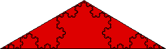

| We'll try to compute the area of the Koch curve by covering it with isosceles triangles (suggested by the general shape of the Koch curve). |
| Using smaller and smaller triangles should give a better estimate of the area of the Koch curve. |
| First, cover the Koch cuve with a single triangle. |
| This triangle has base length 1 and altitude sqrt(3)/6 (from the Pythagorean theorem), |
| hence area |
| A0 = (√3)/12. |
| Certainly, the area of the Koch curve is less than A0. |
|  |
Here is the second approximation.
Return to Ineffective Ways to Measure.